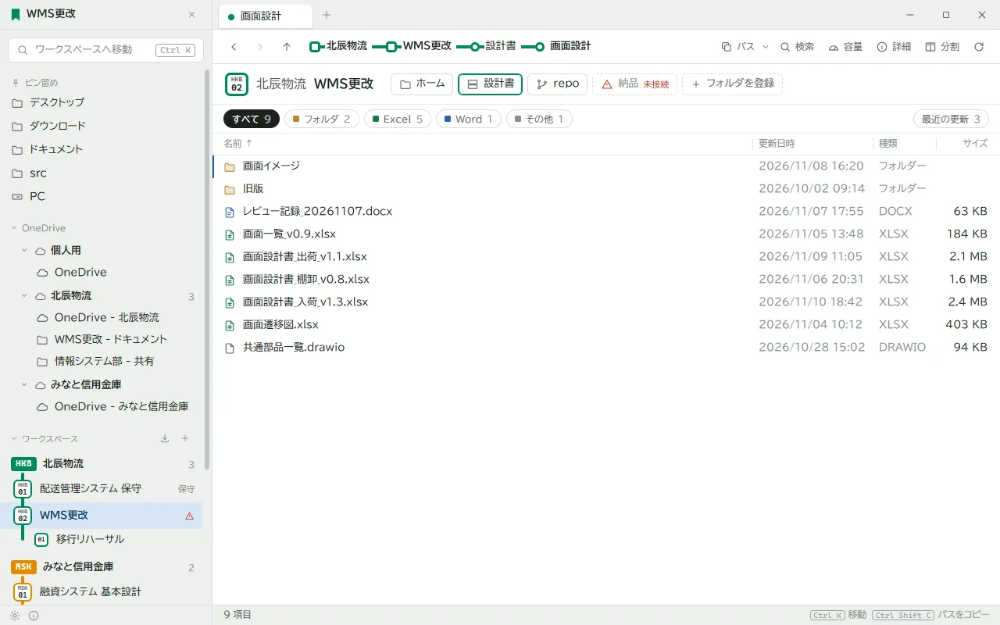
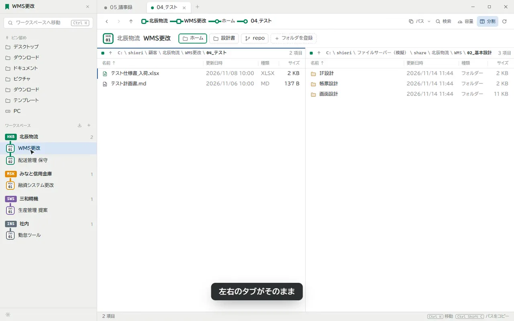
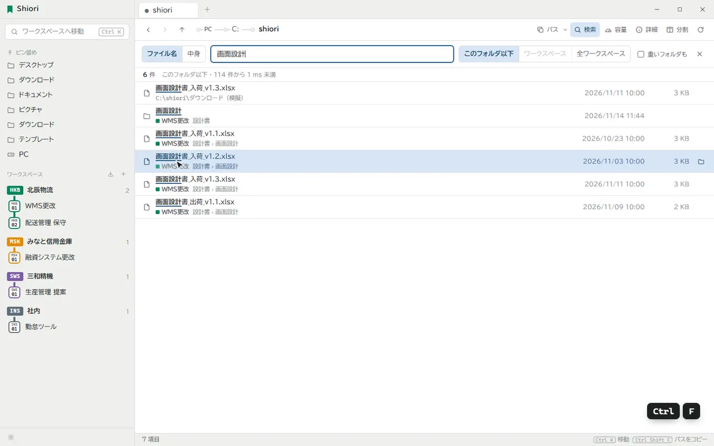
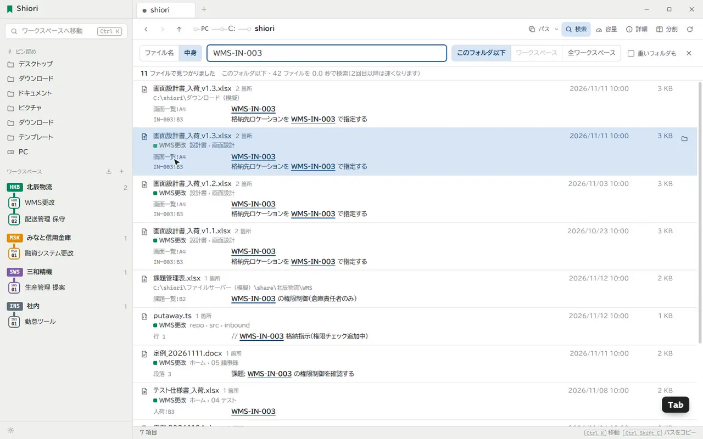
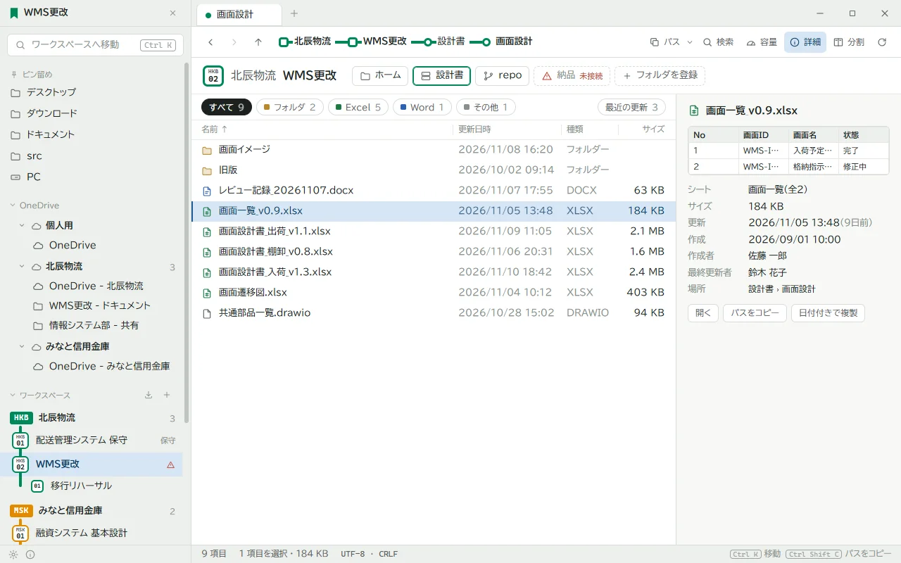
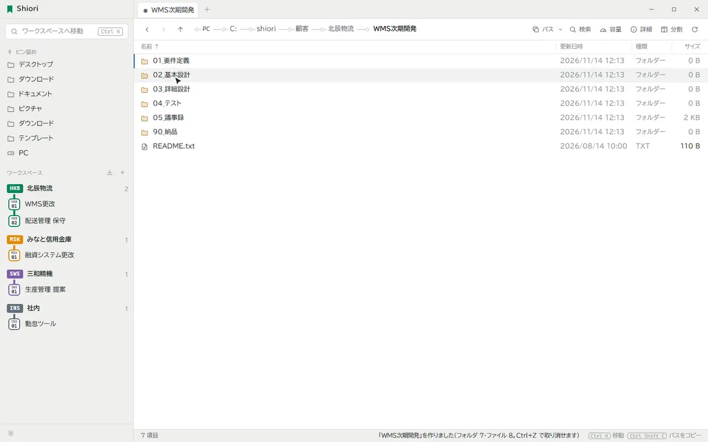
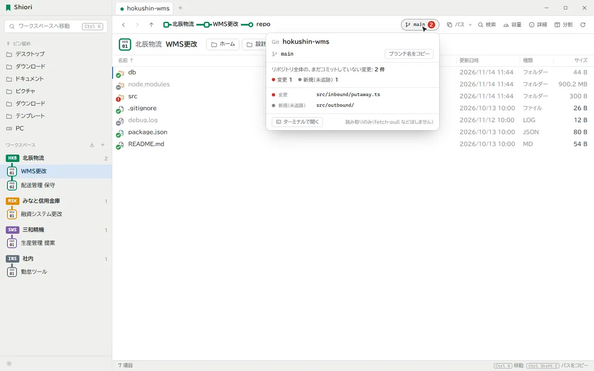
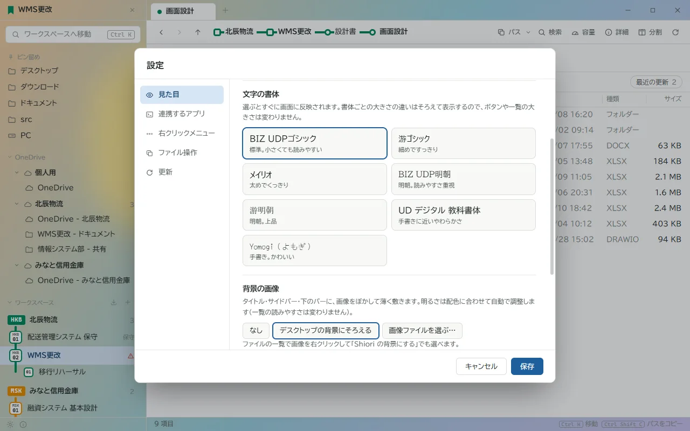
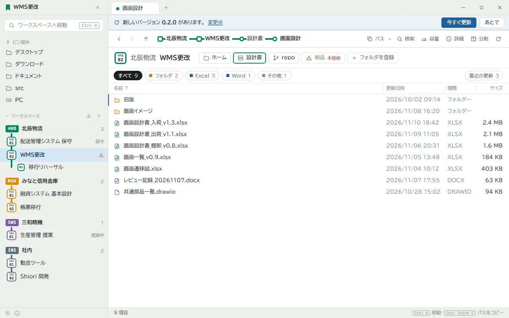

Shiori の使い方
Shiori は、ひとつの案件で使うフォルダ（共有フォルダの設計書、手元のリポジトリ、受け取った資料など）を「ワークスペース」にまとめて、いつでもすぐに開けるファイラーです。ここでは、できることを画面の写真といっしょに紹介します。写真の名前やフォルダはすべて見本です。
画面の見かた

1 2 3 4 5 6 7 8 9 10- ワークスペースへ移動名前の一部で探して開きます（Ctrl+K）。
- ピン留め・PCよく使うフォルダと、ドライブの一覧。
- ワークスペース案件ごとのフォルダのまとまり。色と略称で見分けます。
- タブワークスペースごとに、開いていたタブを覚えています。
- パスのバー今いる場所。クリックすると、その階層へ移動します。
- ツールバーパスのコピー、検索、容量、詳細、左右の分割。
- 登録したフォルダワークスペースに登録した「ホーム」「設計書」「repo」など。
- 種類で絞り込みフォルダ・Excel・Word などで一覧を絞ります。
- ファイルの一覧ダブルクリックか Enter で開きます。
- 設定・Shiori について歯車が設定、ⓘ がバージョンとショートカットの一覧。
ワークスペース
ひとつの案件で使うフォルダを、場所がばらばらでもひとつにまとめます。「顧客 › 案件 › 作業」のように、いくつでも入れ子にできます。

- 作る: フォルダを開いて、サイドバーの「ワークスペース」の ＋（Ctrl+Alt+N）。
- フォルダを登録: 見出しの「フォルダを登録」で、別の場所のフォルダ（共有フォルダ、別のドライブなど）も追加できます。
- まとめて取り込む:
顧客\案件のような今のフォルダ構成から、ワークスペースをまとめて作れます（「ワークスペース」の取り込みボタン）。 - 並べ替え: サイドバーでドラッグ。右クリックで名前の変更・色・略称（HKB など）の編集。
- 上から順に開く: Ctrl+1〜9。
- 外す: 右クリック →「Shiori から外す」。フォルダそのものは消えません。
- 接続できないフォルダ（VPN が切れている共有フォルダなど）には「未接続」と出ます。
名前で探して開く


タブと左右の分割
タブと左右の分割は、ワークスペースごとに覚えています。別の案件に切り替えると、その案件で開いていたタブに戻ります。アプリを閉じて開き直しても、ウィンドウの位置や大きさも含めてそのままです。


- 新しいタブ Ctrl+T、閉じる Ctrl+W、閉じたタブを戻す Ctrl+Alt+T。
- 左右の行き来は F6 か Tab、入れ替えは Ctrl+U。
- ファイルを反対側へドラッグするとコピー・移動。ドラッグ中は、登録したフォルダやピン留めも置き場所になります。
- タブを反対側へドラッグすると、そちらで開きます。
フォルダを移動する
アドレス欄（Ctrl+L）には、パスだけでなく、ワークスペースの名前やファイル名、操作の名前も入力できます。

- 戻る Alt+←、進む Alt+→、上の階層へ Alt+↑ または Backspace。
- パスのバーの各部分をクリックすると、その階層へ。長いパスで「…」になっている部分も、押すと一覧が出ます。
- 一覧で文字を打つと、その名前で始まるファイルへカーソルが移ります（エクスプローラーと同じ）。
- よく使うフォルダは、右クリックの「ピン留め」でサイドバーに並べられます。
- ZIP・7z などの圧縮ファイルは、ダブルクリックでフォルダのように中へ入れます（7z・rar は 7-Zip が必要）。
検索
Ctrl+F で、今のフォルダの下を探します。ファイル名は打つそばから見つかり、Tab を押すとファイルの中身の検索に切り替わります。


- 今のフォルダの中だけを名前で絞るときは Ctrl+Shift+F。
- 一覧の上の「Excel」「Word」などのボタンで、種類ごとに絞れます。
プレビューと詳細
ファイルを選んで Space を押すと、開かずに中身を確認できます。↑↓ で次のファイルへ、Enter でそのまま開きます。


ファイルの操作

- コピー・移動: Ctrl+C・Ctrl+X・Ctrl+V とドラッグ。大きなコピーは順番に処理し、進み具合を下に表示します。同じ名前があるときは、どうするか聞きます。
- 元に戻す: Ctrl+Z。名前の変更・移動・コピーに加えて、ごみ箱に入れた削除も元の場所に戻せます。
- 日付を付けて複製: 「画面設計書_20261114.xlsx」のように、今日の日付を付けてコピーします。
- パスのコピー: Ctrl+Shift+C。ツールバーの「パス」から、UNC のパスなど別の形でもコピーできます。
- 比較: 2 つ選んで右クリック →「比較」で WinMerge を開きます（ファイル同士・フォルダ同士）。
- 開く: ターミナル（Ctrl+Shift+T）、エディタ（Ctrl+Shift+E）で今の場所を開けます。
- OneDrive・SharePoint のフォルダでは、「クラウドのみ」「この PC にある」などの状態を表示します。
テンプレート
「01_要件定義」「02_基本設計」…のような案件フォルダのひな形を、フォルダ構成ごとテンプレートにできます。新しい案件は、名前を付けるだけで同じ構成のフォルダができます。


テンプレートにしたいフォルダを右クリックして「テンプレートとして登録」するか、設定 →「ファイル操作」で追加します。
Git の状態
Git のリポジトリを開くと、パスのバーの右にブランチ名と、まだコミットしていない変更の数が出ます。数えるのは今開いているフォルダの中だけです。押すと、変更のあるファイルの一覧が出ます。

空き容量のチェック
ツールバーの「容量」（Ctrl+Shift+D）で、ドライブの空きと、どのフォルダが場所を取っているかを大きい順に表示します。別のウィンドウで開くので、調べながら作業を続けられます。

コマンドパレットとショートカット
やりたいことの名前で操作を探せるのが、コマンドパレット（Ctrl+Shift+P）です。ショートカットキーの一覧は、サイドバーの下の ⓘ（Shiori について）で見られます。


設定と更新


- 配色は 4 つ（昼・夜行・常磐・墨）。選ぶとすぐに反映されます。
- 起動時の更新の確認は、設定 →「更新」でオフにできます。Shiori がインターネットに接続するのは、この確認と更新のときだけです。
- ワークスペースと設定は
%APPDATA%\jp.shiori.app\にテキストファイル（TOML）で保存されます。